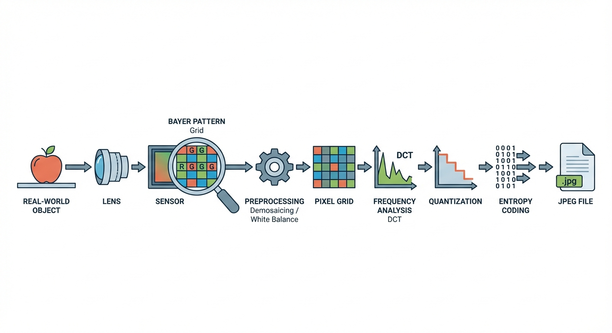

We've reached the end of Part 1 of this course. It's been quite a journey! We have traveled all the way from a physical photon bouncing off an object in the real world to a compressed binary file sitting on your hard drive.
Continue
Before we move on to the next major phase of computer vision—where we actually teach computers to understand what they are looking at—it is crucial to put all the pieces we've learned into a single, coherent picture.
Remember
A computer never sees the 'real' world. It only sees a reconstruction based on a long chain of processing steps. If any link in this chain changes, the final image changes.
Continue
The Grand Pipeline
Let's visualize the complete image generation pipeline. This is the roadmap of everything we have covered in the previous chapters.

Here is the path data takes to become a JPEG:
Continue
1. The Physical World: Light reflects off an object (like an apple).
2. Optics: The lens focuses this light onto the sensor.
3. Analog-to-Digital: Photodiodes convert light intensity into electricity, and the Bayer filter ensures we capture color information.
4. Preprocessing: The camera demosaics the raw Bayer data to interpolate full RGB colors for every pixel.
Continue
5. Frequency Transform: We chop the image into \(8\times8\) blocks and apply the DCT to separate low and high frequencies.
6. Quantization: We divide these frequencies by a quantization table and round them integers. This is where we lose data to save space.
7. Encoding: We use the Zigzag scan and Huffman coding to pack the zeros efficiently.
It is a lot of work just to save a selfie, isn't it? But understanding this pipeline is the key to understanding the artifacts and limitations of digital images.
Continue
Assemble the Pipeline
Let's see if you can reconstruct the pipeline from memory. This is vital for understanding where errors or artifacts might be introduced in a computer vision system.
Drag the cards to the correct step in the pipeline.
Excellent! You have successfully reconstructed the path from light to file. Notice how 'Quantization' comes after the Transform—we can only compress effectively once we've separated the important frequencies from the unimportant ones.
Continue
Do You Trust the Image?
Now that you have built the pipeline, I want you to consider a philosophical question that has very practical engineering implications.
Stop and Think
Now that you know how much processing happens before you even see the image, do you trust a digital photo as a perfect representation of reality?
Reflect: You probably shouldn't! Between the interpolation of colors (Demosaicing) and the removal of high-frequency details (Quantization), the image is a reconstruction, not a perfect copy. Artifacts like ringing or color bleeding are mathematical side-effects, not features of the real world.
In Computer Vision, we must always remember that we are analyzing decoded numbers, not physical reality. If a compression algorithm removes a texture, our AI models will never see it.
Continue
Final Check: Chapter 6
Before we conclude Part 1 of the course, let's test your mastery of Frequency Analysis and Compression with a comprehensive quiz.
Test Your Knowledge 1/5
Which of the following best describes 'Spatial Frequency' in an image?
How fast the image loads on a webpage.
The rate at which pixel intensity changes across the image.
The number of red pixels versus blue pixels.
The frame rate of a video.
Next Question
Test Your Knowledge 2/5
Why is the Discrete Cosine Transform (DCT) preferred over the Discrete Fourier Transform (DFT) for image compression?
It preserves the phase information perfectly.
It uses complex numbers, which are more accurate.
It has better Energy Compaction.
Next Question
Test Your Knowledge 3/5
In the JPEG pipeline, which step is primarily responsible for information loss (making it 'lossy')?
Color Space Transformation
Discrete Cosine Transform (DCT)
Quantization
Zigzag Scan
Next Question
Test Your Knowledge 4/5
If you apply a 'High-Pass Filter' to an image in the frequency domain, what is the visual result?
The image becomes blurry.
Only the edges and fine details remain visible.
The image becomes black and white.
Next Question
Test Your Knowledge 5/5
What causes the 'Ringing' or 'Mosquito Noise' artifacts seen in low-quality JPEGs?
The independent processing of 8x8 blocks.
Coarse quantization of high-frequency coefficients.
Converting RGB to YCbCr.
Continue
Review and Reflect
You have done it! You have completed the first major section of this Computer Vision course.
Up until now, we've focused on creating and storing images. We've treated them as data to be captured, transformed, and compressed.
After the break, we flip the script. We will stop treating images as just files to be saved, and start treating them as puzzles to be solved. We will move from Image Processing to true Computer Vision.
Next up: How do computers understand what's in the picture? How do they find edges, corners, and eventually, objects like cats and cars? Get ready!